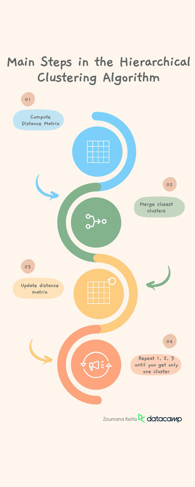
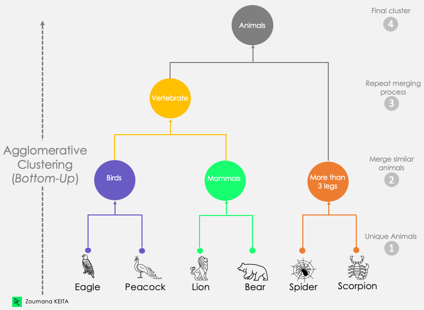
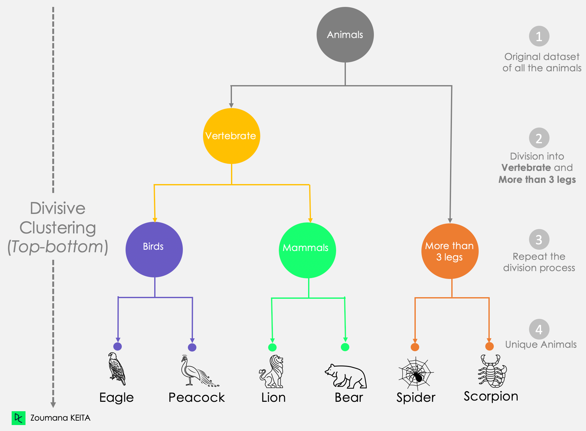
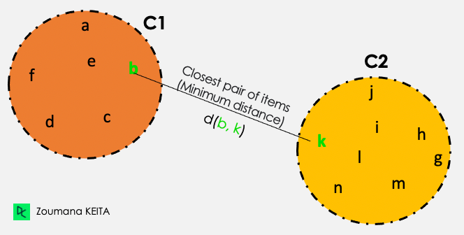
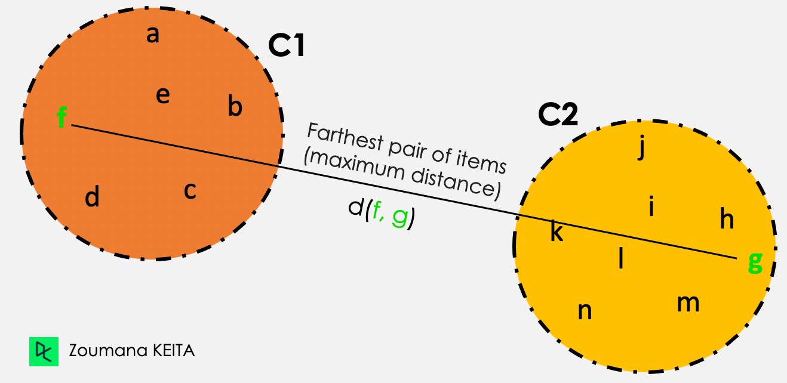
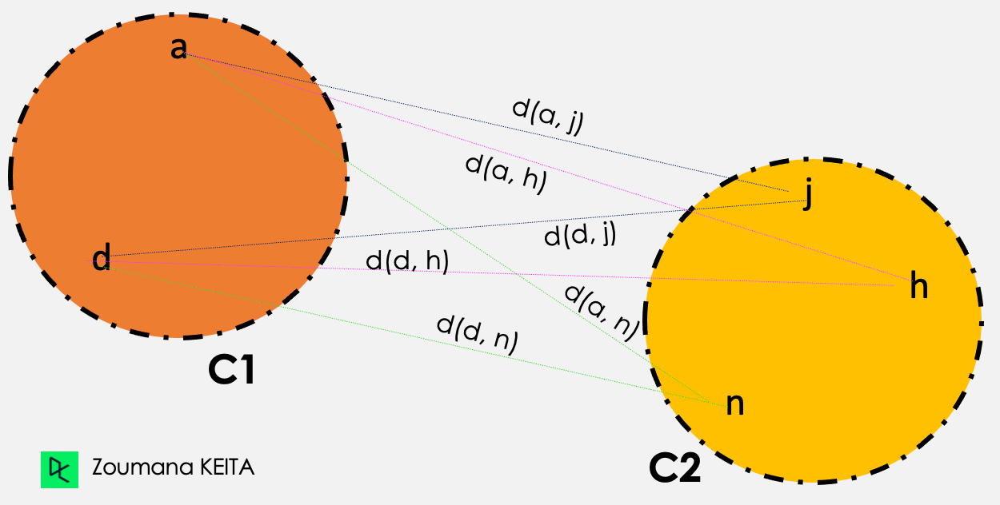

An Introduction to Hierarchical Clustering
Taken from the article “An Introduction to Hierarchical Clustering in Python” from DataCamp
Definition of Hierarchical Clustering
A hierarchical clustering approach is based on the determination of successive clusters based on previously defined clusters. It’s a technique aimed more toward grouping data into a tree of clusters called dendrograms, which graphically represents the hierarchical relationship between the underlying clusters.
Comparison of Hierarchical Clustering to Other Clustering Techniques
Hierarchical clustering is a powerful algorithm, but it is not the only one out there, and each type of clustering comes with its set of advantages and drawbacks.
Let’s understand how it compares to other types of clustering, such as K-means and model-based clustering. Many more techniques exist, but these two, in addition to hierarchical clustering, are widely used and provide a framework to help better understand the others.
You can learn more about clustering in machine learning in our separate article, covering five essential clustering algorithms.
Hierarchical clustering vs K Means clustering
Unlike Hierarchical clustering, K-means clustering seeks to partition the original data points into “K” groups or clusters where the user specifies “K” in advance.
The general idea is to look for clusters that minimize the squared Euclidean distance of all the points from the centers over all attributes (variables or features) and merge those individuals in an iterative manner.
Our K-means Clustering in Python with Scikit-learn tutorial will help you understand the inner workings of K-means clustering with an interesting case study.
Benefits
- It is computationally efficient compared to hierarchical clustering and can be used to analyze large data sets.
- K-means is easier to understand and implement.
Drawbacks
- It is less flexible than hierarchical clustering because it constrains the user to specify the number of clusters beforehand, which may not be obvious in some situations.
- The result is not stable and changes from one iteration to another for the same data set.
- It is more sensitive to outliers because the use of outliers in the data impacts the mean of the cluster.
- Both k-means and hierarchical clustering are incapable of handling categorical data directly and may not work well with data that is not continuous or has very large variance.
Despite its limitations, k-means clustering is still a popular method due to its ease of use and computational efficiency. It is frequently used as a reference point for comparing the performance of other clustering techniques.
Model-based clustering
Both K-means and hierarchical clustering techniques use a distance matrix to represent the distances between all the points in the dataset. Model-based clustering, on the other hand, applies statistical techniques to identify clusters in the data. Below is the general process:
- Decide the statistical model to use and choose the number of clusters.
- Fit the model on the data.
- Identify the clusters based on the model parameters.
Benefits
- Model-based clustering is more flexible than hierarchical clustering because it allows the use of different models to identify different types of clusters.
- It works better on data with complex shapes or structures.
Drawbacks
- It’s computationally more expensive than hierarchical clustering, especially for large data.
- It requires a better understanding of statistical modeling techniques since the choice of the model can affect the final result.
- Similarly to K-means clustering, it requires the number of clusters to be specified beforehand.
Applications of Hierarchical Clustering
Hierarchical clustering has a variety of applications in our day-to-day life, including (but by no means limited to) biology, image processing, marketing, economics, and social network analysis.
Biology
The clustering of DNA sequences is one of the biggest challenges in bioinformatics.
Biologists can leverage hierarchical clustering to study genetic relationships between organisms to classify those organisms into taxonomic groups. This is beneficial for quick analysis and visualization of the underlying relationships.
Image processing
Hierarchical clustering can be performed in image processing to group similar regions or pixels of an image in terms of color, intensity, or other features. This can be useful for further tasks such as image segmentation, image classification, and object recognition.
Marketing
Marketing specialists can use hierarchical clustering to draw a hierarchy between different types of customers based on their purchasing habits for better marketing strategies and product recommendations. For instance, different products in retails can be recommended to customers whether they are low, medium, or high spenders.
The Hierarchical Clustering Algorithm
In this section, we will look at three main concepts. The steps of the hierarchical algorithm, a highlight of the two types of hierarchical clustering (agglomerative and divisive), and finally, some techniques to choose the right distance measure.
Steps involved in the hierarchical clustering algorithm
The hierarchical clustering algorithm employs the use of distance measures to generate clusters. This generation process involves the following main steps:

Preprocess the data by removing missing data and applying any additional tasks that make the data as clean as possible. This step is a more general one for most of the machine learning tasks.
- Compute the distance matrix containing the distance between each pair of data points using a particular distance metric such as Euclidean distance, Manhattan distance, or cosine similarity. But the default distance metric is the Euclidean one.
2.Merge the two clusters that are the closest in distance.
- Update the distance matrix with regard to the new clusters.
- Repeat steps 1, 2, and 3 until all the clusters are merged together to create a single cluster.
Hierarchical clustering examples
We can consider agglomerative and divisive clustering as mirrors of each other. Let’s have a better look at how each one operates, along with a hierarchical clustering example and graphical visualization.
Agglomerative hierarchical clustering
This first scenario corresponds to the approach explained above. It starts by considering each observation as a singleton cluster (cluster with only one data point). Then iteratively merges clusters until only one cluster is obtained. This process is also known as the bottom-up approach.
As showing in the illustration below:
- We start by considering each animal to be its unique cluster.
- Then we generate three different clusters from those unique animals based on their similarities:
- Birds: Eagle and Peacock
- Mammals: Lion and Bear
- More than three leg animals: Spider and Scorpion.
- We repeat the merging process to create the vertebrate cluster by combining the two most similar clusters: Birds and Mammals.
- After this step, the remaining two clusters, Vertebrate and More than three legs, are merged to create a single Animals cluster.

Dendrogram of Agglomerative Clustering Approach
Divisive clustering
On the other hand, divisive clustering is top-down because it starts by considering all the data points as a unique cluster. Then it separates them until all the data points are unique.
From this divisive approach graphic:
- We notice that the whole animal dataset is considered as a single bloc.
- Then, we divide that block into two clusters: Vertebrate and More than 3 legs.
- The division process is iteratively applied to the previously created clusters until we get unique animals.

Dendrogram of Divisive Clustering Approach
Choosing the right distance measure
Your choice of distance measure is a critical step in clustering, and it depends on the problem you’re trying to solve. Considering the following scenario, we could cluster students based on any number of approaches such as their:
- Country of origin
- Gender, either male or female
- Previous academic background.
These are all valid clusters but differ in meaning.
Even though Euclidean distance is the most common distance used in most clustering software, other distance measures such as Manhattan distance, Canberra distance, Pearson or Spearman correlation, and Minkowski distance exist.
How to measure clusters before merging them
The previously mentioned distances are related to items. In this section, we will cover three standard ways (not exhaustive) to measure the nearest pair of clusters before merging them: (1) Single linkage, (2) Complete linkage, and (3) Average linkage.
Single linkage
From all the pairwise distances between the items in the two clusters C1 and C2, the single linkage takes the distance between the clusters as the minimum distance.
Distance (C1, C2) = Min { d(i, j), where item i is within C1, and item j is within C2}
Out of all the pairs of items from the two clusters, the ones highlighted in green have the minimum distance.

Single linkage illustration
Complete linkage
From all the pairwise distances between the items in the two clusters C1 and C2, the single linkage takes the distance between the clusters as the maximum distance.
Distance (C1, C2) = Max { d(i, j), where item i is within C1, and item j is within C2}
Out of all the pairs of items from the two clusters, the ones highlighted in green have the maximum distance.

Complete linkage illustration
Average linkage
In the average linkage clustering, the distance between two given clusters C1 and C2 corresponds to the average distances between all pairs of items in the two clusters.
Distance (C1, C2) = Sum{ d(i, j) } / Total Number of distances

Average linkage illustration
Then the average linkage clustering is performed as follows
d(a,j) + d(a,h) + d(a,n) + d(d,j) + d(d,h) + d(d,n)
————————————————————–, where Total number of distances = 6
Total number of distances
Social network analysis
Social networks are a great source of valuable information when exploited efficiently. Hierarchical clustering can be used to identify groups or communities and to understand their relationships to each other and the structure of the network as a whole.